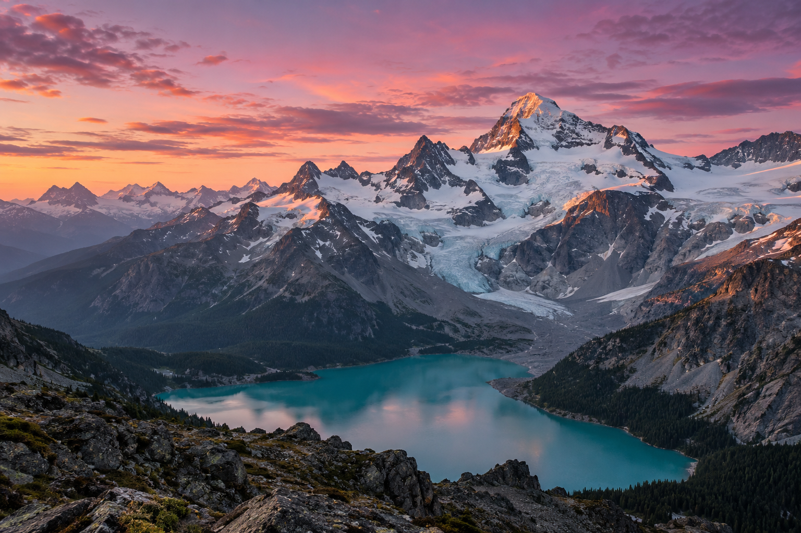

КАЧЕСТВО ИСТОЧНИКА
Оригинал, когда он доступен.
Расширение проверяет ссылки и данные медиа на странице. Если источник недоступен или выбор неоднозначен, вы получите понятный результат.
Кадр, к которому хочется вернуться.
Видео, которое стоит оставить.
Сохраняйте доступные оригиналы прямо из браузера.

Правый клик по медиа → Save media.
MediaLatch ищет доступный оригинал
и передаёт загрузку браузеру.
Нажмите Save media на фотографии. Так выглядит действие в расширении — без поиска ссылки вручную.
Это интерактивный пример. Файл не скачивается, расширение не требуется.
Всё нужное для сохранения.
И контроль над тем, что остаётся
в вашем браузере.
Расширение проверяет ссылки и данные медиа на странице. Если источник недоступен или выбор неоднозначен, вы получите понятный результат.
Inline-сохранение на X, Reddit и RedGIFs. На X и Reddit — также пакеты медиа поста.
Своя подпапка, организация по сайту и типу файла. Результаты сохранений — в окне расширения.
До 50 завершённых сохранений за 7 дней, только на вашем устройстве. Изначально выключена.
Адаптеры для отдельных сайтов
и универсальный поиск медиа.
Возможности зависят от источника.
Изображения, видео, MP4-анимации и пакеты поста
Медиа + inlineОригиналы, GIF и отдельные поддерживаемые HLS-потоки
Медиа + inlineВыбранный ролик; вариант со звуком, когда доступен
Видео + inlineПоиск через ссылки, srcset и атрибуты медиа
Зависит от сайтаОсновные проверки — Helium на Windows. DRM, обход доступа и универсальная загрузка HLS/DASH не поддерживаются. Полная матрица поддержки
Без телеметрии и сервера расширения. Сохранение обращается к сайту и его CDN, проверка релизов — к GitHub. История хранится локально; отчёты копируются только по вашему запросу.
Как устроена приватностьMediaLatch бесплатно. Сейчас — открытое превью
для ручной установки в Chromium.
Выпуск в магазинах и поддержка Firefox запланированы. Кнопки станут активными после публикации.
В релизе выберите MediaLatch-2.0.0.26-*.zip.
Нужен готовый архив расширения, а не Source code.
Скопируйте адрес в новую вкладку браузера.
Включите «Режим разработчика» → «Загрузить распакованное расширение». Выберите папку с manifest.json.
После установки обновите вкладки сайтов. При обновлении сборки сохраняйте прежнюю папку, перезагружайте расширение и вкладки.
Нет. Расширение сохраняет доступные медиа в поддерживаемых сценариях. DRM, обход авторизации, произвольные blob/MSE-плееры и универсальные HLS/DASH-загрузки не поддерживаются. Разметка и ограничения сайтов могут меняться.
По умолчанию — в Downloads/SavedImages/. В настройках можно выбрать подпапку внутри загрузок браузера и включить организацию по сайту и типу медиа. Произвольные пути на диске пока не поддерживаются.
Скачайте новый готовый ZIP из GitHub Releases, замените файлы в прежней папке, нажмите «Перезагрузить» на странице расширений и обновите вкладки. Распакованная установка обновляется вручную.
Да. MediaLatch — новое имя Image Saver. Существующие настройки и папки сохранения совместимы. В расширении доступны русский и английский языки.